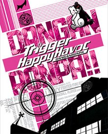

Danganronpa |
||
|---|---|---|
|  | Sinopsis: Dangaronpa empieza con Makoto Naegi, quien comienza un nuevo año en la academia de élite Hope's Peak, famosa por formar a estudiantes de élite. Sin embargo un oso robot llamado Monokuma toma el control de la escuela y los atrapa dentro de ella. Monokuma les dice que para escapar, los estudiantes deben «graduarse» de la escuela asesinando a un compañero de clase; si un cuerpo ha sido descubierto por un mínimo de 3 estudiantes, el resto de los estudiantes deberán trabajar e investigar juntos para descubrir al culpable. Si el culpable logra engañar a todos, este podrá graduarse de la escuela y el resto de los estudiantes serán ejecutados. Sin embargo, si se descubre culpable, entonces este será ejecutado según su talento. |
Desarrollador: Spike Chunsoft Plataformas: PlayStation Portable, Play Station Vita, PlayStation 4, PC Año: 2010 Duracion:25 horas aprox Pais:Japon |
Criticas Profesionales:Zelia LopezLa saga de Danganronpa es de esos juegos que si bien se ven de lo más cliché (y sí, cuenta con bastantes clichés del anime/manga), los usan de forma humorística y, en otros casos, casi pareciera que apropósito. Los muchos plot-twist que uno puede encontrarse a lo largo de la historia, como la diversidad de personajes, lo vuelven de esas historias que, a mientras más tiempo uno las juega, más te atrapa. |
Trailer |
Obtener:AlquilarComprar |
Registrate/Iniciar Sesion